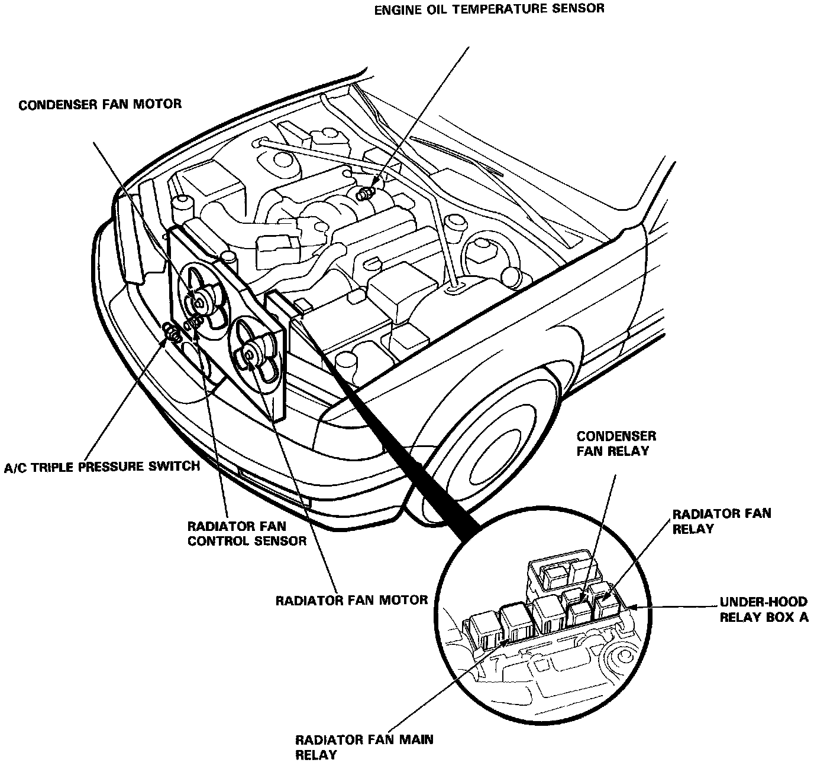
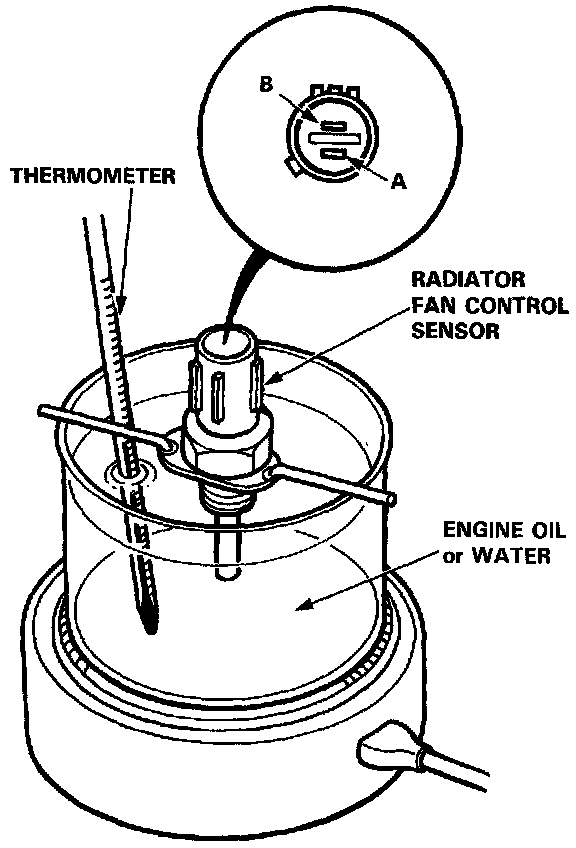
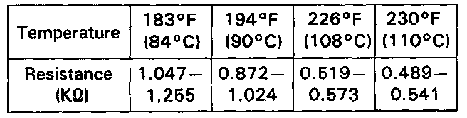

Radiator Cooling Fan Temperature Sensor / Switch: Testing and Inspection
CAUTION: Do not remove the radiator cap when the engine is hot. The coolant is under pressure and may blow out and scald you. Open the cap slowly when the engine is cool.NOTE: Bleed air out of the cooling system after installing the radiator fan control sensor.
CAUTION: Failure to comply with the bleeding procedure could cause imperfect bleeding, which may result in severe engine damage.

1. Remove the radiator fan control sensor from the radiator.

2. Suspend the radiator fan control sensor in a container of engine oil or water as shown.
3. Heat the engine oil or water and check the temperature with a thermometer.

4. Measure the resistance between the A and B terminals according to the table.
5. It you don't get the above readings, replace the radiator fan control sensor.
NOTE: Clean the sensor after testing.